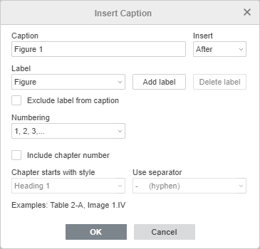
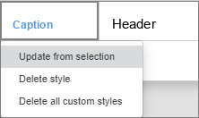
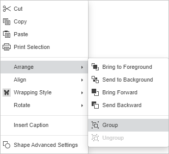

Dodavanje naslova
Naslov je numerisana oznaka koja se može primeniti na objekte, kao što su jednačine, tabele, figure i slike u dokumentu.
Naslov omogućava kreiranje reference u tekstu – lako prepoznatljiva oznaka na objektu.
U Document Editor-u možete koristiti naslove i za kreiranje tabele figura.
Da biste dodali naslov objektu:
- odaberite objekat kojem želite da primenite naslov;
- prebacite se na karticu Reference u gornjoj traci;
-
kliknite na ikonu Naslov u gornjoj traci ili kliknite desnim tasterom miša na objekat i izaberite opciju Umetni naslov da otvorite dijalog Umetni naslov
- izaberite oznaku koju želite koristiti za naslov klikom na padajuću listu oznaka i odabirom objekta, ili
- kreirajte novu oznaku klikom na dugme Dodaj oznaku da otvorite dijalog Dodaj oznaku. Unesite ime oznake u polje za tekst, a zatim kliknite OK da dodate novu oznaku u listu oznaka;
- označite polje Uključi broj poglavlja da promenite numeraciju naslova;
- u padajućem meniju Umetni izaberite Ispred da stavite oznaku iznad objekta ili Iza da je stavite ispod objekta;
- označite polje Isključi oznaku iz naslova da ostavite samo broj za ovaj naslov u skladu sa rednim brojem;
- zatim možete izabrati kako će se numerisati naslov dodeljivanjem određenog stila naslovu i dodavanjem separatora;
- da primenite naslov, kliknite na dugme OK.

Brisanje oznake
Da obrišete oznaku koju ste kreirali, odaberite oznaku iz liste u dijalogu za naslove, a zatim kliknite dugme Obriši oznaku. Oznaka će odmah biti uklonjena.
Napomena: Možete brisati oznake koje ste kreirali, ali ne možete brisati podrazumevane oznake.
Formatiranje naslova
Čim dodate naslov, novi stil za naslove se automatski dodaje u sekciju stilova. Da biste promenili stil za sve naslove u dokumentu, pratite ove korake:
- odaberite tekst da biste kopirali novi stil Naslov;
- pronađite stil Naslov (po default-u istaknut plavom bojom) u galeriji stilova na kartici Početna u gornjoj traci;
- kliknite desnim tasterom miša i izaberite opciju Ažuriraj sa odabranog.

Grupisanje naslova
Da biste pomerili objekat i naslov kao jednu celinu, potrebno je grupisati objekat i naslov:
- odaberite objekat;
- odaberite jedan od stilova obavijanja koristeći desni panel;
- dodajte naslov kao što je opisano gore;
- držite Shift i odaberite stavke koje želite da grupišete;
- kliknite desnim tasterom i izaberite Rasporedi > Grupiši.

Sada će se oba objekta pomerati istovremeno ako ih prevučete negde u dokumentu.
Da razgrupšete objekte, kliknite na Rasporedi > Razgrupiši.